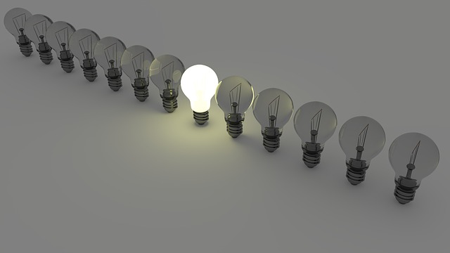

Team Profile
Analysis
Our team consists of four members. Although each member has different personalities, there are several similarities at the same time. According to the Learning style test, it is estimated that all members tend to study efficiently by using visual materials. It is also reckoned that all four members have an above-average open-mindedness and creativeness in the big five personality test. Moreover, MBTI test reports that the type of two members, including me, is INFP, one member is ENFP and the other member is ESFJ. The strong points of INFP which I belong to are open-mindedness, creativeness and thoughtfulness, whereas the weak points of INFP are overly idealistic and impractical. Next, people who belong to ENFP tend to be enthusiastic, friendly and excellent communicators, but they also have poor practical skills and struggle with focusing. Lastly, ESFJ’s strengths are strong practical skills, strong sense of duty and sensitivity while weaknesses of them are inflexible to change and reluctant to be innovative.
Evaluation
Respect each other
Overall, our team is inclined to be sociable and care about others' emotions when they interact with people. The reason for this might be their strengths are similar, which are thoughtful, friendly and sensitive based on MBTI tests. They prefer to communicate and connect with others even though one member and I are introverted. In addition, our team will possibly respect a variety of opinions from other members since they have agreeableness greater than 50 percent. This characteristic might benefit in teamwork considering conflicts due to differences of opinion or emotional issues is common difficulties in collaboration. If each team member makes efforts to respect other team member's ideas and express their disagreement politely, conflicts might be declined in team projects.

Creative and open-minded
It is also expected that our team might have a number of ideas from various areas.
The reasons might be that one of the strong points of I and a member which are types of INFP are creative and all members have 50 percent above open-mindness.
Creativeness is one of the crucial elements in the team project. It can not only propose new ideas but also alternatives and resolutions.
Though it is possible that ideas may be generated in a variety of fields
since members have different interests, novel ideas will probably lead to fascinating results as long as bridging the opinion gap.
In learning style tests, It will be the optimal way if a member proposes their ideas by using a visual method in the team meeting.
For example, it might be efficient to present their design of a website by using tables, pictures rather than texts.
Complementary
Our team members also complement each other's weaknesses to strengths. Based on the MBTI tests, three members containing me who have NFP traits tend to present fascinating ideas but at the same time, the ideas will possibly be too ideal to realize. Moreover, the type of NFP also struggles with maintaining focus on and accomplishing the objects. On the other hand, another member, the type of ESFJ, is likely to have practical and competent time management but also unwilling to unfamiliar and novel ideas. Although the team members strive for individual fragilities independently, the weaknesses of the members will be improved in team projects if they are complementary to each other through their strong points. For example, a member of the type of ESFJ can be a planner who tracks and confirms the progress of members to follow a plan and other members support the member to get out of the box and propose new ideas in the project.